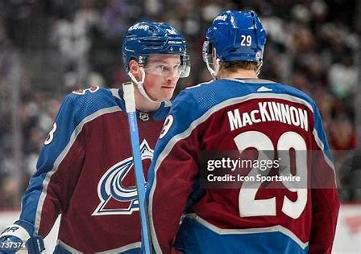

Cale Makar is the best of the best when it comes to talent for NHL defenseman. Ever since he stepped into the league, the 2017 4th overall pick has made an immediate impact. Makar last season posted 90 points and lead his Avalanche team from the backend. His elite edgework along with ability to possess the puck makes him so special. Makar can slow the game down and speed it up whenver he wants, everytime he's on the ice he makes a postive impact for his team.
Makar's CareerNathan Mackinnon is a talented skater and playmaker who causes nightmares for the oppoistion every time he's on the ice. THe 2011 1st overall pick and current captain of the Avalanche just posted a career high 140 points this past season. Along with MacKinnon's ability to skate and make plays for his teammates, he can always find the back of the net. Mackinnion along with his skills were a big factor in the 2022 Stanley Cup playoffs where he hoisted his first Stanley Cup. THe combination of himself and Makar on the same team is scary for everyone who steps onto the ice against them.
MacKinnon's Career Connor McDavid is considered by many to be the best current athlete. The 2015 first overall pick is so dominant in every realm of his game, it's truly amazing to watch. McDavid last year posted his FOURTH straight 100 point season with 132 total. McDavid never fails to amaze fans every night with his top notch skill. He single handedly turned around the Oilers organization and was one game away from winning it all in 2023-2024. McDavid recently reached a career milestone of his 1000th point, while this is very difficult, many more are to come for him. He is the best player this league has ever seen and it's not up for debate.
McDavid's Career